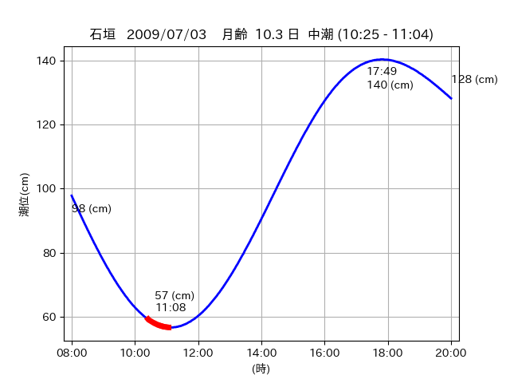
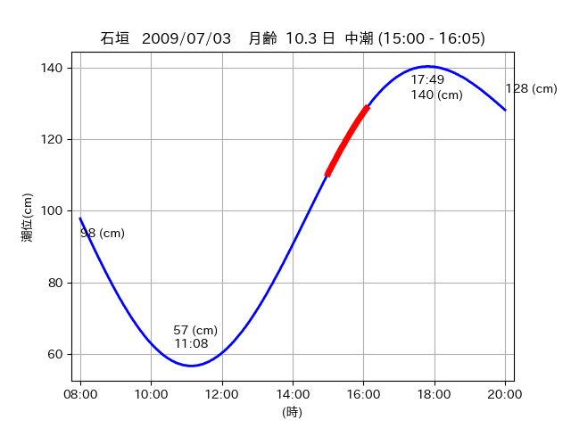

<!DOCTYPE html>
<html>
<head>
    
    <meta http-equiv="content-type" content="text/html; charset=UTF-8" />
    
        <script>
            L_NO_TOUCH = false;
            L_DISABLE_3D = false;
        </script>
    
    <style>html, body {width: 100%;height: 100%;margin: 0;padding: 0;}</style>
    <style>#map {position:absolute;top:0;bottom:0;right:0;left:0;}</style>
    <script src="https://cdn.jsdelivr.net/npm/leaflet@1.9.3/dist/leaflet.js"></script>
    <script src="https://code.jquery.com/jquery-3.7.1.min.js"></script>
    <script src="https://cdn.jsdelivr.net/npm/bootstrap@5.2.2/dist/js/bootstrap.bundle.min.js"></script>
    <script src="https://cdnjs.cloudflare.com/ajax/libs/Leaflet.awesome-markers/2.0.2/leaflet.awesome-markers.js"></script>
    <link rel="stylesheet" href="https://cdn.jsdelivr.net/npm/leaflet@1.9.3/dist/leaflet.css"/>
    <link rel="stylesheet" href="https://cdn.jsdelivr.net/npm/bootstrap@5.2.2/dist/css/bootstrap.min.css"/>
    <link rel="stylesheet" href="https://netdna.bootstrapcdn.com/bootstrap/3.0.0/css/bootstrap-glyphicons.css"/>
    <link rel="stylesheet" href="https://cdn.jsdelivr.net/npm/@fortawesome/fontawesome-free@6.2.0/css/all.min.css"/>
    <link rel="stylesheet" href="https://cdnjs.cloudflare.com/ajax/libs/Leaflet.awesome-markers/2.0.2/leaflet.awesome-markers.css"/>
    <link rel="stylesheet" href="https://cdn.jsdelivr.net/gh/python-visualization/folium/folium/templates/leaflet.awesome.rotate.min.css"/>
    
            <meta name="viewport" content="width=device-width,
                initial-scale=1.0, maximum-scale=1.0, user-scalable=no" />
            <style>
                #map_f55b4ea440491216bbda3e37a95d44e2 {
                    position: relative;
                    width: 2048.0px;
                    height: 1600.0px;
                    left: 0.0%;
                    top: 0.0%;
                }
                .leaflet-container { font-size: 1rem; }
            </style>
        
</head>
<body>
    
    
            <div class="folium-map" id="map_f55b4ea440491216bbda3e37a95d44e2" ></div>
        
</body>
<script>
    
    
            var map_f55b4ea440491216bbda3e37a95d44e2 = L.map(
                "map_f55b4ea440491216bbda3e37a95d44e2",
                {
                    center: [24.521, 124.313],
                    crs: L.CRS.EPSG3857,
                    ...{
  "zoom": 12,
  "zoomControl": true,
  "preferCanvas": false,
}

                }
            );

            

        
    
            var tile_layer_448e7f6a6919d1e7ee296e737520c490 = L.tileLayer(
                "https://cyberjapandata.gsi.go.jp/xyz/seamlessphoto/{z}/{x}/{y}.jpg",
                {
  "minZoom": 0,
  "maxZoom": 18,
  "maxNativeZoom": 18,
  "noWrap": false,
  "attribution": "\u5730\u7406\u9662\u5730\u56f3",
  "subdomains": "abc",
  "detectRetina": false,
  "tms": false,
  "opacity": 1,
}

            );
        
    
            tile_layer_448e7f6a6919d1e7ee296e737520c490.addTo(map_f55b4ea440491216bbda3e37a95d44e2);
        
    
            var marker_a7c182717ec76d098773994c11e488f0 = L.marker(
                [24.5566, 124.3339],
                {
}
            ).addTo(map_f55b4ea440491216bbda3e37a95d44e2);
        
    
            var icon_e3dd5ce9b1a11e3339cb838ecb8f7323 = L.AwesomeMarkers.icon(
                {
  "markerColor": "orange",
  "iconColor": "white",
  "icon": "info-sign",
  "prefix": "glyphicon",
  "extraClasses": "fa-rotate-0",
}
            );
        
    
        var popup_b54b4d0c7a0cfce9253ed2cf9aa02483 = L.popup({
  "maxWidth": "100%",
});

        
            
                var html_0acaead5e4ede492d03d44367507114d = $(`<div id="html_0acaead5e4ede492d03d44367507114d" style="width: 100.0%; height: 100.0%;"><table><tr><td></td></tr><tr><td><center>20090703 No.1 </center></table></td></tr></table</div>`)[0];
                popup_b54b4d0c7a0cfce9253ed2cf9aa02483.setContent(html_0acaead5e4ede492d03d44367507114d);
            
        

        marker_a7c182717ec76d098773994c11e488f0.bindPopup(popup_b54b4d0c7a0cfce9253ed2cf9aa02483)
        ;

        
    
    
                marker_a7c182717ec76d098773994c11e488f0.setIcon(icon_e3dd5ce9b1a11e3339cb838ecb8f7323);
            
    
            var poly_line_95155085940ed04cd041acfe5ff988ef = L.polyline(
                [[24.5566, 124.3339], [24.558, 124.3348]],
                {"bubblingMouseEvents": true, "color": "#FF00FF", "dashArray": null, "dashOffset": null, "fill": false, "fillColor": "#FF00FF", "fillOpacity": 0.2, "fillRule": "evenodd", "lineCap": "round", "lineJoin": "round", "noClip": false, "opacity": 1.0, "smoothFactor": 1.0, "stroke": true, "weight": 3}
            ).addTo(map_f55b4ea440491216bbda3e37a95d44e2);
        
    
            var marker_2a47af87842062b9846418fb57466420 = L.marker(
                [24.5626, 124.3502],
                {
}
            ).addTo(map_f55b4ea440491216bbda3e37a95d44e2);
        
    
            var icon_53f2e0e016984a6db05af484322b13f3 = L.AwesomeMarkers.icon(
                {
  "markerColor": "orange",
  "iconColor": "white",
  "icon": "info-sign",
  "prefix": "glyphicon",
  "extraClasses": "fa-rotate-0",
}
            );
        
    
        var popup_5ac1ac2dc88327fd82633578ebfedd1f = L.popup({
  "maxWidth": "100%",
});

        
            
                var html_3e8c7422476f58e8a0b56bc9ed9b5cd2 = $(`<div id="html_3e8c7422476f58e8a0b56bc9ed9b5cd2" style="width: 100.0%; height: 100.0%;"><table><tr><td></td></tr><tr><td><center>20090703 No.2 </center></table></td></tr></table</div>`)[0];
                popup_5ac1ac2dc88327fd82633578ebfedd1f.setContent(html_3e8c7422476f58e8a0b56bc9ed9b5cd2);
            
        

        marker_2a47af87842062b9846418fb57466420.bindPopup(popup_5ac1ac2dc88327fd82633578ebfedd1f)
        ;

        
    
    
                marker_2a47af87842062b9846418fb57466420.setIcon(icon_53f2e0e016984a6db05af484322b13f3);
            
    
            var poly_line_1f3f4392b30cb328ccf8fe578f37f575 = L.polyline(
                [[24.5626, 124.3502], [24.5724, 124.352]],
                {"bubblingMouseEvents": true, "color": "#FF00FF", "dashArray": null, "dashOffset": null, "fill": false, "fillColor": "#FF00FF", "fillOpacity": 0.2, "fillRule": "evenodd", "lineCap": "round", "lineJoin": "round", "noClip": false, "opacity": 1.0, "smoothFactor": 1.0, "stroke": true, "weight": 3}
            ).addTo(map_f55b4ea440491216bbda3e37a95d44e2);
        
    
            var marker_1af1e84b022cb60483ef4dabf00e99af = L.marker(
                [24.5179, 124.3116],
                {
}
            ).addTo(map_f55b4ea440491216bbda3e37a95d44e2);
        
    
            var icon_dfdd5f5a9fc5bef5ba6892e1cd6a2716 = L.AwesomeMarkers.icon(
                {
  "markerColor": "orange",
  "iconColor": "white",
  "icon": "info-sign",
  "prefix": "glyphicon",
  "extraClasses": "fa-rotate-0",
}
            );
        
    
        var popup_8a3edb6bc2613fda1896dc6973bb7528 = L.popup({
  "maxWidth": "100%",
});

        
            
                var html_eb046f1a6ffab074ffb36cab4d475e4b = $(`<div id="html_eb046f1a6ffab074ffb36cab4d475e4b" style="width: 100.0%; height: 100.0%;"><table><tr><td></td></tr><tr><td><center>20090703 No.3 </center></table></td></tr></table</div>`)[0];
                popup_8a3edb6bc2613fda1896dc6973bb7528.setContent(html_eb046f1a6ffab074ffb36cab4d475e4b);
            
        

        marker_1af1e84b022cb60483ef4dabf00e99af.bindPopup(popup_8a3edb6bc2613fda1896dc6973bb7528)
        ;

        
    
    
                marker_1af1e84b022cb60483ef4dabf00e99af.setIcon(icon_dfdd5f5a9fc5bef5ba6892e1cd6a2716);
            
    
            var poly_line_8e88d9f067e355b60b910467486a314c = L.polyline(
                [[24.5179, 124.3116], [24.5241, 124.3149]],
                {"bubblingMouseEvents": true, "color": "#FF00FF", "dashArray": null, "dashOffset": null, "fill": false, "fillColor": "#FF00FF", "fillOpacity": 0.2, "fillRule": "evenodd", "lineCap": "round", "lineJoin": "round", "noClip": false, "opacity": 1.0, "smoothFactor": 1.0, "stroke": true, "weight": 3}
            ).addTo(map_f55b4ea440491216bbda3e37a95d44e2);
        
</script>
</html>